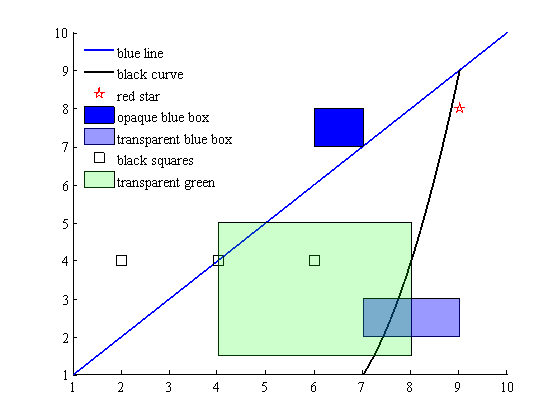

legalpha
This function creates a legend whose patch objects match the transparency (alpha values) of plotted patch objects. Syntax follows legend exactly. In fact, if you so desire, you could always use legalpha instead of legend.
Contents
Example
Let's plot a bunch of different types of data:
plot(1:10,1:10,'b','linewidth',2); hold on plot(7:.01:9,(1:.01:3).^2,'k','linewidth',2) plot(9,8,'rp','markersize',12) fill([6 7 7 6],[7 7 8 8],'blue') fill([7 9 9 7],[2 2 3 3],'blue','facealpha',0.4) plot(2:2:6,[4 4 4],'ks','markersize',12) fill([4 8 8 4],[1.5 1.5 5 5],'g','facealpha',0.2) box off
That's a pretty good looking graph, but we need to label the data. First let's look at what legend does to those semitransparent patches:
legend('blue line','black curve','red star','opaque blue box',... 'transparent blue box','black squares','transparent green','location','northwest') legend boxoff
Above we see that the legend ignores patch transparency. So we use legapha:
legalpha('blue line','black curve','red star','opaque blue box',... 'transparent blue box','black squares','transparent green','location','northwest') legend boxoff
Author Info
This function written by Chad A. Greene of the University of Texas at Austin's Institute for Geophysics (UTIG) in August of 2014.